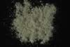

|
|
(For further information on spectroscopy, see:
http://speclab.cr.usgs.gov)
TITLE: Augite WS592 Pyroxene DESCRIPT
DOCUMENTATION_FORMAT: MINERAL
SAMPLE_ID: WS592
MINERAL_TYPE: Inosilicate
MINERAL: Augite (Pyroxene Group, was listed as Diopside)
FORMULA: (Ca,Na)(Mg,Fe,Al,Ti)(Si,Al)2O6
FORMULA_HTML: (Ca,Na)(Mg,Fe,Al,Ti)(Si,Al)2O6
COLLECTION_LOCALITY: Klammath, OR
ORIGINAL_DONOR: Wards Mineral Collection
CURRENT_SAMPLE_LOCATION: USGS Denver Spectroscopy Laboratory
ULTIMATE_SAMPLE_LOCATION: USGS Denver Spectroscopy Laboratory
SAMPLE_DESCRIPTION:
IMAGE_OF_SAMPLE:

END_SAMPLE_DESCRIPTION.
XRD_ANALYSIS:
40 kV - 30 mA, 6.7-9.5 keV
File: dipsd592_mdi
References: PDF2 #41-1370; Huebner's cell refinement for diopside, Rotkopschart,
Zillertal, Austria
Found: Clinopyroxene
Comments: Very sharp peaks and excellent resolution of alpha1-alpha2 components
indicate excellent crystallinity and compositional homogeneity. All observed
reflections indexed can be diopside-rich clinopyroxene. Lattice spacing's are
slightly smaller than HS-15, HS-119, and synthetic end member diopside. Profile-based
search match returns aluminum augite (41-1370, 5.4 percent, Al2O3), which is
an excellent visual match to WS-592. Unit cell dimensions are a=9.728(4), b=8.904(4),
c=5.258(2) Angstroms, and beta=106.39(4) degrees. These observations are consistent
with diopsidic augite.
END_XRD_ANALYSIS.
COMPOSITIONAL_ANALYSIS_TYPE: None # XRF, EM(WDS), ICP(Trace), WChem
COMPOSITION_TRACE: None
COMPOSITION_DISCUSSION:
END_COMPOSITION_DISCUSSION.
MICROSCOPIC_EXAMINATION:
Bimodal grain size distribution:
population 1 size = 223 microns at 60 vol%
population 2 size = 40 microns at 40 vol%
avg gr sz = 174 µm
Trace magnetite. Two cleavages at nearly right angles, inclined extinction, slight pleochroism?, pale green color, high order color under cross-polarized light, biaxial (+). All consistent with augite. G. Swayze.
END_MICROSCOPIC_EXAMINATION.
SPECTROSCOPIC_DISCUSSION:
END_SPECTROSCOPIC_DISCUSSION.
SPECTRAL_PURITY: 1b2c3c4_ # 1= 0.2-3, 2= 1.5-6, 3= 6-25, 4= 20-150 microns
| LIB_SPECTRA_HED: | where | Wave Range | Av_Rs_Pwr | Comment |
|---|---|---|---|---|
| LIB_SPECTRA: | splib04a r 614 | 0.2-3.0µm | 200 | g.s.= 174 µm |
| LIB_SPECTRA: | splib05a r 1262 | 0.2-3.0µm | 200 | g.s.= |
| LIB_SPECTRA: | splib06a r 3247 | g.s.= | ||
| LIB_SPECTRA: | splib06a r 3259 | g.s.= |
{kind=link}